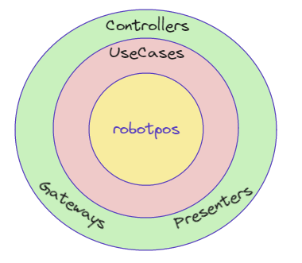
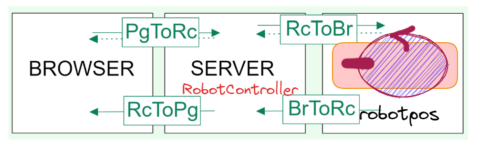
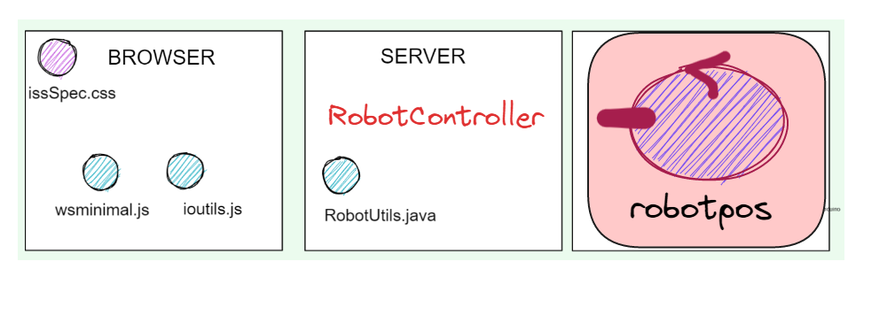
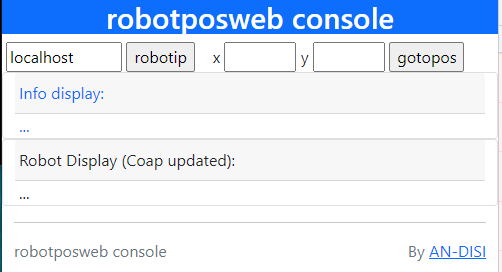

robotposweb¶
Consideriamo il seguente problema.
Posizionamento robot come webappl¶
In relazione all’applicazione Posizionamento del robot, costruire un sistema software che permetta a un utente umano :
reqINPUT: di inviare al servizio robotpos le coordinate della posizione target tramite un’applicazione web;
reqOUTPUT: di visualizzare la posizione corrente del robot nella stanza
robotposweb Analisi dei requisiti¶
In una applicazione web, un client accede all’applicazione connettendosi mediante protocolli di rete a funzionalità di elaborazione residenti su un application server. Un client umano utilizza come terminale utente un web browser.
robotposweb Analisi del problema¶
In applicazione web leggiamo:
lo sviluppo in locale delle applicazioni web necessita del supporto di un application server installato sul PC dello sviluppatore che funzioni da back-end su cui effettuare il deployment dell’applicazione. Ad ogni passo dello sviluppo si testa interfaccia utente e businees logic, verificando poi il risultato prodotto (front-end) digitando il relativo url sul web browser.
Leggiamo inoltre che:
Spesso, relativamente allo sviluppo della parte di presentazione ed elaborazione, si utilizzano framework web come Java Struts e Spring che implementano il design pattern Model-View-Controller (MVC)). Questi framewok semplificano lo sviluppo dell’applicazione stessa riducendone i tempi di realizzazione.
Per un confronto tra Java Struts e Spring, si può vedere https://anywhere.epam.com/business/java-spring-vs-struts.
In questa sede, si ritiene opportuno avvalersi del framework SpringBoot, i cui concetti fondamentali sono descritti in SpringBootIntro. Qui ricordiamo solo che SpringBoot:
è un framework che offre una gamma di funzionalità per la creazione di applicazioni Web, tra cui l’inserimento di dipendenze, la configurazione automatica e il supporto per varie origini dati e tecnologie Web.
è progettato per essere altamente modulare e scalabile e fornisce un’ampia gamma di estensioni e plug-in per supportare diversi casi d’uso.
L’obiettivo di questa fase è di usare SpringBoot per dotare l’applicazione robotpos (che abbiamo già costruito) della interfaccia web voluta.
In altre parole, usiamo SpringBoot per abilitare la nostra applicazione con le nuove funzionalità desiderate, seguendo i principi ricordati in:
Facendo riferimento alla Architettura esagonale: La parte presenter viene impostata tenendo separati i casi d’uso dall’interfaccia utente, come indicato in Architettura del WebServer (SpringBootIntro). |
 |
{kind=link}
robotposweb Progetto¶
Creiamo il progetto robotposweb seguendo le indicazioni di Primi passi con SpringBoot.
Fasi preliminari¶
Aggiungiamo il file
gradle.propertiescon il contenuto:kotlinVersion = 1.6.0
Aggiungiamo il file
banner.txtinsrc\main\resources\usando bannerOnline (font small )Nel file
application.propertiesdisrc\main\resources\inseriamo:spring.application.name = robotposweb spring.banner.location = classpath:banner.txt server.port = 8185 robotposweb.robotip = not connected
Il dato robotposweb.robotip è destinato a definire il valore dell’indirizzo IP del componente robotpos.
Al momento,
contiene un valore iniziale che dovrà essere modificato dall’utente.
Questo dato viene visualizzato in un campo con identificatore referenziabile dal RobotHIController mediante il Modello della pagina (SpringBootIntro), come indicato in Interazione PgToRc (Pagina-RobotHIController).
Enable SpringBoot live DevTools¶
La feature di auto-restart mediante Spring Developer Tools non sembra abilitata di default in Intellij (come avviene invece in Eclipse). Per provare ad attivarla manualmente, si consulti la rete, ad esempio : https://medium.com/javarevisited/spring-boot-developer-tools-and-intellij-b16c7e5f39e4
build.gradle di robotposweb¶
Aggiorniamo build.gradle:
plugins {
<PARTE GENERATA>
id 'application'
}
version = '1.0'
sourceCompatibility = '11'
repositories {
mavenCentral()
flatDir { dirs '../unibolibs' }
}
dependencies {
<PARTE GENERATA>
//Libreria Kotlin-runtime
implementation 'org.jetbrains.kotlin:kotlin-stdlib-jdk8'
//Per comunicazioni WebSocket NOSTOMP della pagina HTML
implementation("org.springframework:spring-websocket:5.3.14")
//webjars
implementation 'org.webjars:webjars-locator-core'
implementation 'org.webjars:bootstrap:5.1.3'
implementation 'org.webjars:jquery:3.6.0'
//JSON
implementation 'com.googlecode.json-simple:json-simple:1.1.1'
//COAP
implementation group: 'org.eclipse.californium',
name: 'californium-core', version: '3.5.0'
implementation group: 'org.eclipse.californium',
name: 'californium-proxy2', version: '3.5.0'
//UNIBO
implementation name: 'uniboInterfaces'
implementation name: '2p301'
implementation name: 'unibo.qakactor23-3.5'
implementation name: 'unibo.basicomm23-1.0'
}
mainClassName = 'unibo.robotposweb.RobotposwebApplication'
jar {
println("executing jar")
from sourceSets.main.allSource
manifest {
attributes 'Main-Class': "$mainClassName"
}
}
|
|
Una prima pagina HTML¶
Impostiamo (in Per la pagina finale si veda robotposGui.html. |
File robotposwebNaivegui.html <!DOCTYPE html>
<html>
<head>
<meta charset="UTF-8">
<title>robotposwebNaivegui</title>
</head>
<body>
<h1>robotposweb console</h1>
<form action="setrobotip" method="post">
<input type="text" size="10"
name="ipaddr" value="localhost">
<input type="submit" value="robotip">
</form>
<form action="dorobotpos" method="post">
x <input type="text" size="4" name="x" />
y <input type="text" size="4" name="y" />
<input type="submit" value="gotopos">
</form>
</body>
|
{kind=link}
Progettazione¶
Distinguiamo due fasi:
Costruzione della parte pagina dell’applicazione che riguarda la impostazione della pagina HTML.
Costruzione della parte dinamica che permette all’applicazione Web di interagire da un lato con utente umano (attraverso un Browser) e da un altro lato con l’attore robotpos.
Per la parte pagina, ci accontentiamo per ora della proto-pagina HTML, che riprogettaremo (in robotposGui.html) dopo avere discusso l’organizzazione dinamica dall’applicazione.
Inoltre ci concentriamo sul requisito reqINPUT, rimandando la discussione sul requisito reqOUTPUT a Interazione robotpos-RobotHIController.
Macro-componenti e loro interazione.
|  |
|
{kind=link}
In linea di princpio, una pagina HTML potrebbe anche agire come osservatore diretto (usando il protocollo CoAP) del robotpos. Tuttavia, notiamo che:
I Browser non supportano API JavaScript per CoAP per motivi di sicurezza (legate a UDP)
Questo rende necessario che il RobotHIController funga da mediatore tra le informazioni emesse via CoAP da
robotpos e la pagina, attraverso le interazioni BrToRc e RcToPg.
Supporti lato client e lato server¶
La realizzazione si avvale di supporti sia nella pagina Web sia nel server:
|  | Pagina HTML: Server: |
{kind=link}
RobotHIController¶
@Controller
public class RobotHIController {
public final static String actorName = "robotpos";
protected String mainPage = "robotposwebNaivegui";
//protected String mainPage= "robotposwebGui";
//Settaggio di variabili relative ad attributi del modello
@Value("${robotposweb.robotip}") //see application.properties
String robotip;
@GetMapping("/")
public String entry(Model viewmodel) {
return buildThePage(viewmodel);
}
@PostMapping("/setrobotip")
public String setrobotip(Model viewmodel,
@RequestParam String ipaddr ){ ... }
@PostMapping("/dorobotpos")
public String dorobotpos(Model viewmodel,
@RequestParam String x,
@RequestParam String y ){ ... }
@ExceptionHandler
public ResponseEntity handle(Exception ex) { ... }
//METODI DI UTILITA'
protected String buildThePage(Model viewmodel){ ... }
protected void setConfigParams(Model viewmodel){ ... }
}//Controller
|
Il |
viewmodel¶
L’oggetto viewmodel di classe org.springframework.ui.Model opera come un contenitore per dati applicativi,
che vengono aggiornati, prima dell’invio della pagina di risposta, utilizzando
il metodo setConfigParams.
Chiamate HTTP al Controller¶
La interazione tra il Browser che contiene la pagina HTML e il Controller della Web application è relativa a richieste:
di tipo GET, iniviata dal Browser all’inizio della connessione;
di tipo POST, provenienti dai pulsanti robotip (che induce la esecuzione del metodo setrobotip e gotopos (che induce la esecuzione del metodo dorobotpos.
Per questo tipo di interazione occorre tenere presente le indicazioni di Roy Fielding e le note sullo stile architetturle Representational State Transfer in Appunti API Rest.
Al termine della elaborazione di ciascuna richiesta, il Controller risponde al Browser attraverso la creazione di una pagina HTML di risposta.
buildThePage e setConfigParams¶
protected String buildThePage(Model viewmodel) {
setConfigParams(viewmodel);
return mainPage;
}
protected void setConfigParams(Model viewmodel){
viewmodel.addAttribute("robotip", robotip);
}
|
Il metodo Questo template include campi che vengono aggiornati da Thymeleaf con i valori correnti degli attibuti del viewmodel (metodo setConfigParams). |
setrobotip¶
Il metodo setrobotip del Controller tiene traccia nel viewmodel dell’indirzzo IP del robot (ipaddr)
immesso dall’utente e inizializza una connessione con robotpos usando il protocollo TCP.
Si inizializza anche una connessione CoAP con il robot, associando ad essa un RobotposCoapObserver che ha lo scopo di realizzare la Interazione RcToPg (RobotHIController-Pagina).
@PostMapping("/setrobotip")
public String setrobotip(Model viewmodel, @RequestParam String ipaddr ){
robotip = ipaddr;
viewmodel.addAttribute("robotip", robotip);
RobotUtils.connectActorUsingTcp(ipaddr);
//Attivo una connessione CoAP per osservare la risorsa-attore
RobotUtils.connectActorUsingCoap(ipaddr);
return buildThePage(viewmodel);
}
RobotUtils.java¶
La classe RobotUtils fornisce le operazioni di connessione che costruiscono
oggetti di tipo Interaction (di cui CoapConnection è una specializzazione).
public class RobotUtils {
public static final int actorCtxPort = 8111;
private static Interaction tcpconn;
private static Interaction coapconn;
public static void connectWithRobotUsingTcp(String addr){
...
tcpconn = TcpClientSupport.connect(addr, robotPort, 10);
}
public static CoapConnection connectWithRobotUsingCoap(String addr){
...
String ctxqakdest = "ctxrobotpos";
String qakdestination = "worker";
String path = ctxqakdest+"/"+qakdestination;
coapconn = new CoapConnection(addr+":"+ actorCtxPort, path );
return (CoapConnection) conn;
}
//Iniva (via TCP) il dispatch moverobot all'attore robotpos
public static void doRobotPos(String x, String y ){
try {
String msg = ""+ CommUtils.buildRequest("webgui",
"moverobot", "moverobot("+x+","+ y +")", "worker");
Interaction conn = (tcpconn != null) ? tcpconn : coapconn;
String answer = conn.request( msg ); //in model?
} catch (Exception e) {... }
}
Interazione RcToBr (RobotHIController-robotpos)¶
La interazione tra il Controller e il robot viene attivata dall’utente usando il button gotopos,
la cui pressione provoca la esecuzione del metodo dorobotpos
del RobotHIController.
dorobotpos¶
Il metodo dorobotpos del Controller non modifica il viewmodel,
ma realizza la interazione con robotpos invocando il metodo RobotUtils.sendMsg.
@PostMapping("/robotmove")
public String doRobotPos(Model viewmodel,
@RequestParam String x, @RequestParam String y ){
RobotUtils.doRobotPos( x,y );
buildThePage(viewmodel);
}
Interazione BrToRc (robotpos-RobotHIController)¶
Avviene sfruttando il fatto che robotpos è una risorsa CoAP-observable (si veda Attore come risorsa CoAP (QakActors23)) che aggiorna i suoi CoAP-observers utilizzando l’operazione built-in updateResource per le informazioni connesse al requisito observable di Robots23.
Per ricevere e gestire queste informazioni (messaggi di stato), viene introdotto il POJO RobotposCoapObserverObserver.
RobotposCoapObserver¶
public class RobotposCoapObserver implements CoapHandler{
@Override
public void onLoad(CoapResponse response) {
try {
Thread.sleep(300); //Per dare tempo alla pagina di visualizzarsi
} catch (InterruptedException e) {... }
WebSocketConfiguration.wshandler.sendToAll("" + response.getResponseText());
}
@Override
public void onError() {
CommUtils.outred("RobotposCoapObserver observe error!");
}
}
Interazione RcToPg (RobotHIController-Pagina)¶
Il RobotposCoapObserver si avvale del WebSocketHandler gia introdotto
in SpringBootIntro per
inviare i messaggi di stato a tutti i client HTTP connessi al server.
public class WebSocketHandler extends AbstractWebSocketHandler implements IWsHandler {
...
public void sendToAll(TextMessage message) throws IOException{
Iterator<WebSocketSession> iter = sessions.iterator();RobotCoapObserverpmg
while( iter.hasNext() ){
iter.next().sendMessage(message);
}
}
}
robotposGui.html¶
Avvalendoci di Bootstrap5, impostiamo il nuovo file
robotposGui.html (in src/main/resources/templates), in modo da migliorare l’aspetto della
proto-pagina HTML, organizzando la pagina
nelle aree mostrate in figura:
infoDisplay e robotDisplay¶
|  |
|
{kind=link}
La pagina viene impostata come un template il cui campo robotip viene inizializzato da Thymeleaf secondo quanto specificato dal RobotHIController nella fase di costruzione della pagina (si veda buildThePage e setConfigParams).
Usiamo Bootstrap5¶
Abilitiamo l’uso di Bootstrap5, nella sezione head del file HTML:
<head>
<meta charset="UTF-8">
<meta name="viewport" content="width=device-width, initial-scale=1.0"> <!-- bootstrap: ensure proper rendering -->
<title>robotposwebGui</title>
<link href="https://cdn.jsdelivr.net/npm/bootstrap@5.1.3/dist/css/bootstrap.min.css" rel="stylesheet">
<script src="https://cdn.jsdelivr.net/npm/bootstrap@5.1.3/dist/js/bootstrap.bundle.min.js"></script>
<link rel="stylesheet" href="css/issSpec.css">
<link rel="shortcut icon" href="images/mbotIot.png" type="image/x-icon">
</head>
Contenuto della pagina¶
Per quanto riguarda la struttura e il contenuto, la pagina viene suddivisa in due Containers di tipo fluid, uno per il titolo e uno per il contenuto vero e proprio.
<body>
<div class="container-fluid bg-primary text-white text-center">
<h1>robotposweb console</h1>
</div>
<div class="container-fluid">
<!-- Contenuto della pagina -->
</div>
<footer>
<!-- FOOTER -->
</footer>
</body>
L’area di input viene organizzata entro una riga (di 12 colonne, come indicato in `Grids`_ )
che contiene due colonne: la colonna di sinistra (di ampiezza 5)
è riservata al pulsante robotip, mentre la colonna di destra (di ampiezza 7)
è riservata al pulsante gotopos.
Seguono due Cards per le aree infoDisplay e robotDisplay.
Interazione PgToRc (Pagina-RobotHIController)¶
La pagina robotposGui.html viene dotata di supporti utili per la interazione con il server attraverso codice JavaScript, contenuto nei files ioutils.js e wsminimal.js.
JavaScript di supporto nella pagina¶
ioutils.js¶
Il file ioutils.js definisce operazioni (setMessageToWindow e addMessageToWindow) utili
a inserire messaggi in aree denotate dall’argomento outfield.
function setMessageToWindow(outfield, message) {
var output = message.replace("\n","<br/>")
outfield.innerHTML = `<tt>${output}</tt>`
}
Aree in cui inserire messaggi sono infoDisplay e robotDisplay,
const infoDisplay = document.getElementById("display");
const robotDisplay = document.getElementById("robotDisplay");
Si defnisce una funzione che usa Ajax per inviare via HTTP comandi POST al server e per visualizzare nell’area infoDisplay un messaggio di successo/falimento dell’invio .
function callServerUsingAjax(message) {
$.ajax({
type: "POST",
url: "robotmove", //Dove inviare i dati
data: "move=" + message, //Dati da inviare
dataType: "html",
success: function(msg){
setMessageToWindow(infoDisplay,message+" done")
},
error: function(){
alert("Chiamata fallita, si prega di riprovare...");
}
});
}
wsminimal.js for WS¶
Il file wsminimal.js, è già stato introdotto in WebApplication con SpringBoot. Esso definisce funzioni che realizzano la connessione via socket con il server e funzioni di I/O che permettono di inviare un messaggio al server e di visualizzare la risposta.
Si riporta qui il codice della funzione connect che crea una WebSocket usando l’URL
ws://SERVERHOSTIP/socket.
function connect(){
var host = document.location.host;
var pathname = "/"
var addr = "ws://" +host + pathname + "socket" ;
// Assicura che sia aperta un unica connessione
if(socket !== undefined && socket.readyState !== WebSocket.CLOSED){
alert("WARNING: Connessione WebSocket già stabilita");
}
socket = new WebSocket(addr);
socket.onopen = function (event) {
setMessageToWindow(infoDisplay,"Connected to " + addr);
};
socket.onmessage = function (event) {
console.log("ws-status:" + `${event.data}`);
console.log(""+`${event.data}`);
setMessageToWindow(robotDisplay,""+`${event.data}`);
};
}//connect
La proprietà
socket.onopendefinisce l’handler invocato alla apertura della socket. Questo handler invocasetMessageToWindowdi ioutils.js per visualizzare nell’area infoDisplay l’avventuta apertura.La proprietà
socket.onmessagedefinisce l’handler invocato alla ricezione di un messaggio. Questo handler invocasetMessageToWindowdi ioutils.js per visualizzare il messaggio nell’area robotDisplay.
Stili custom: issSpec.css¶
La specifica degli stili custom si trova nel file src/main/resources/static/css/issSpec.css.